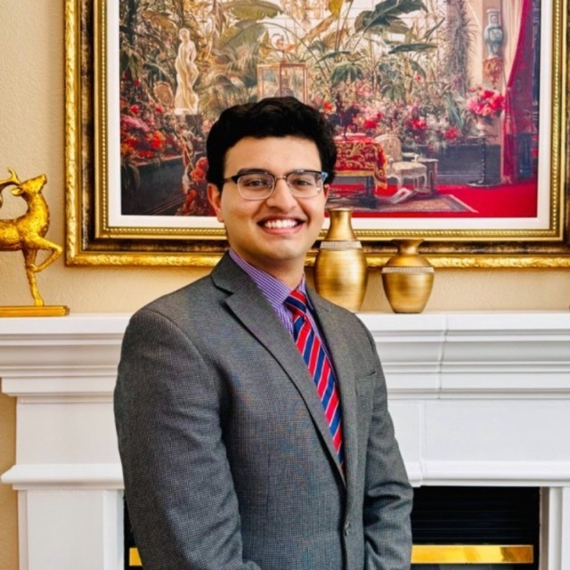
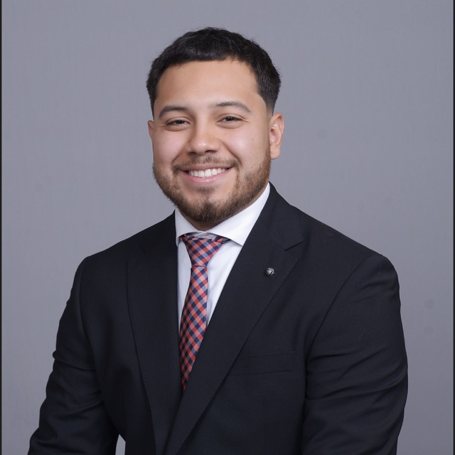
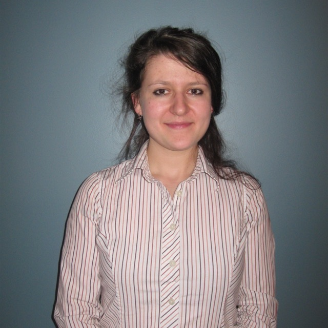

UMass Chan Medical School · Fall 2026
Treating the Athlete
A class where medical students learn to take care of injured athletes, from the sideline to surgery, taught by the doctors who do it.
Sport, then recovery — the two halves of sports medicine.
- 7 eveningsMonday nights, Fall 2026
- Hands-onUltrasound & skills in person
- Pass / failNo exams, just take part
- Open to allAny UMass Chan med student
What it is
A class where you learn to be an athlete's doctor.
When an athlete gets hurt, someone has to check them on the field, put a dislocated joint back, spot a concussion, and know when it needs surgery. That's sports medicine, and medical school barely covers it.
Over seven evenings, sports-medicine and orthopedic doctors walk you through how they actually care for athletes. Some nights you practice the skills yourself. It's pass/fail, no exams, and open to any UMass Chan medical student.
What you'll learn
Six things every athlete's doctor knows
- 01
Cover the game
Be the doctor on the sideline: the emergency plan and the medical bag.
- 02
Reset a joint
Spot a dislocation and learn the safe way to put it back.
- 03
Know when it's surgery
How surgeons decide when an injury needs an operation.
- 04
Handle concussions
Check for a head injury and decide when it's safe to return.
- 05
Train and fuel athletes
The real evidence behind strength, conditioning, and nutrition.
- 06
Practice with your hands
Try point-of-care ultrasound and hands-on skills yourself.
The schedule
Seven Monday evenings, plus a hands-on night
Mondays at 7 PM through the fall, mostly online, with an in-person hands-on night at the end.
- Sep 14
Covering the game & careers in sports medicine
Lee Mancini, MD - Sep 28
Hands-on techniques for sore muscles & joints
Mancini & Eshleman - Oct 5
Putting dislocated joints back in place
Michael Maddaleni, MD - Oct 19
Shoulder injuries & when they need surgery
Nicola DeAngelis, MD - Oct 26
Strength & conditioning
Lee Mancini, MD - Nov 9
Sports nutrition & supplements
Lee Mancini, MD - Nov 16
Concussions & getting back to play
Lee Mancini, MD - Dec 7 · in person
Hands-on night: ultrasound & skills
Mancini + faculty
Dates are proposed for Fall 2026 and are being finalized.
Hands-on nights
In person at the iTLC, you practice ultrasound and hands-on exam techniques with the faculty. Ultrasound spots are limited.
Real game coverage
Dr. Mancini's team covers game-day medicine for high schools across central Massachusetts, from Worcester to Shrewsbury and Wachusett. You can learn the pre-game medical timeout, the emergency plan, and see the sideline for yourself.
Game coverage sign-up & scheduleThe team
Who runs it
Three UMass Chan medical students lead the class, with a faculty sponsor and the physicians who teach each night.



Want in?
Open to all UMass Chan medical students for Fall 2026. Email us to join or just to ask a question.
doctoroffitness@mac.com